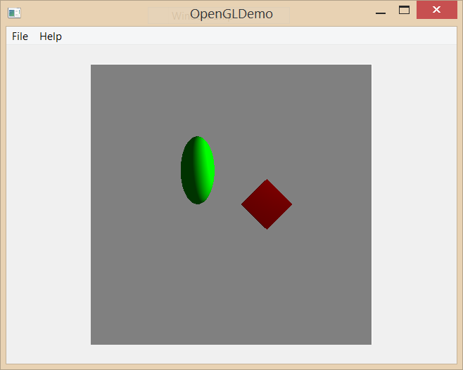

To create a framework of ray casting and ray intersection functions to be used as the basis of future ray tracer assignments.
We will provide you with a substantial framework of code from which to begin your work. This base code contains a class that will parse the XML scene files you'll be using and sets up the various scene data structures, including the OpenGL vertex buffers for previewing your scene. Make sure you spend some time familiarizing yourself with the supplied classes and the ways in which they interface with each other. Note that there is a lot of code that interfaces with OpenGL to draw a preview scene; don't worry about understanding this just yet.
Implement the Camera class's PerspectiveProjectionMatrix and ViewMatrix functions. The PerspectiveProjectionMatrix function should return a perspective projection matrix based on the field of view, aspect ratio, near clip plane, and far clip plane of the camera. The ViewMatrix function should return the camera's view matrix based on its Up, Right, and Forward vectors. You may not use the glm::perspective or glm::lookAt functions.
Implement the Camera class's RecomputeAttributes function. This function defines the Camera's look, right, up, aspect, V, and H member variables. For more information on what these variables represent, refer to camera.h. When you have correctly implemented sections 3.1 and 3.2, you should see the following image when you run your program:

Implement the Ray class's GetTransformedCopy function, which takes a transformation matrix and applies it to the Ray calling the function. Make sure you account for homogeneous coordinates.
Implement the Camera class's Raycast function, which takes a pixel on the screen, converts it to normalized device coordinates, computes a point in space corresponding to that screen point, and casts a ray through that point. You must also implement the RaycastNDC function, which behaves just like the Raycast function but takes as input an X and a Y that are already in normalized device coordinates.
In the Sphere, Cube, SquarePlane, Mesh, and Triangle classes, implement the GetIntersection function that they inherit from the Geometry class. For now, the Mesh class may just return the Triangle intersection with the smallest t value obtained by testing intersection with all of its Triangles.
Implement the body of IntersectionEngine::GetIntersection, which takes a Ray and returns the intersection of the ray with an object in the scene. If the ray hits multiple objects, then the intersection that is closest to the camera but within its near and far clip planes should be returned. If the ray hits nothing, then a default-constructed Intersection should be returned, which notably has a NULL object_hit and a t value of -1.
Implement the body of MyGL::RaytraceScene such that it casts a ray through every pixel in the Camera. If a ray hits an object in your scene, the pixel that generated the ray should be colored according to the surface normal at the point hit; use the Film class to store this data. To draw a surface normal as an RGB color, just use its X component as the Red value, its Y component for Green, and its Z component for Blue. If a ray did not hit anything, it should be colored black. You can test your implementation by clicking the Raytrace Scene option in the dropdown File menu of the GUI.
Submit your cleaned and zipped project on Canvas. Include your test scene renders in your submission.